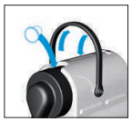
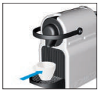
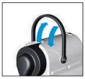

Istruzioni macchinetta del caffè
Preparazione
- Sciacquare e riempire il serbatoio con acqua potabile.
- Accendere la macchina premendo il pulsante Espresso o Lungo.

- Le luci lampeggeranno durante il riscaldamento (circa 25 secondi) e saranno fisse quando la macchina è pronta.
Fare il caffè
- Sollevare la leva e inserire una capsula Nespresso.

- Chiudere la leva completamente e posizionare una tazzina sotto l'erogatore.

- Premere il pulsante Espresso (40 ml) o Lungo (110 ml).
- Il caffè verrà erogato automaticamente. È possibile fermare o aumentare l'erogazione premendo nuovamente il pulsante Espresso/Lungo.
Rimozione della capsula
- Sollevare e chiudere la leva per espellere la capsula usata nel contenitore delle capsule.

Precauzioni di sicurezza
- Non sollevare la leva durante l'erogazione del caffè.
- Non inserire le dita sotto l'erogatore o nello spazio delle capsule.
- Usare solo acqua potabile e non lasciare acqua nel serbatoio per più di due giorni.
- Spegnere la macchina premendo contemporaneamente i pulsanti Espresso e Lungo.